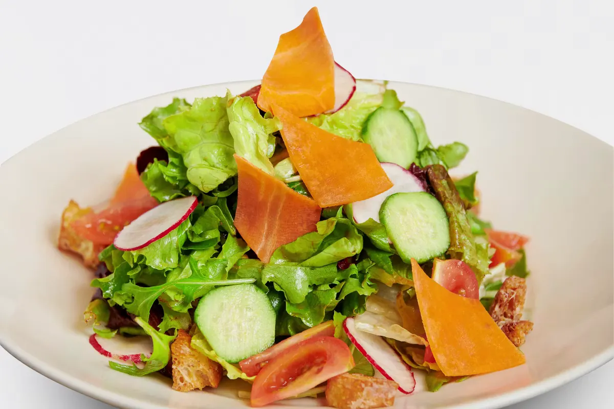
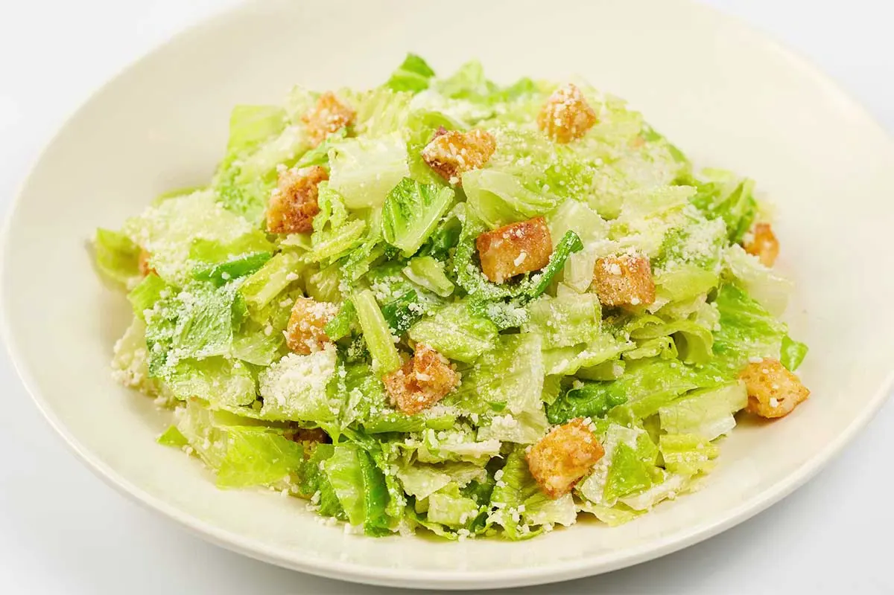
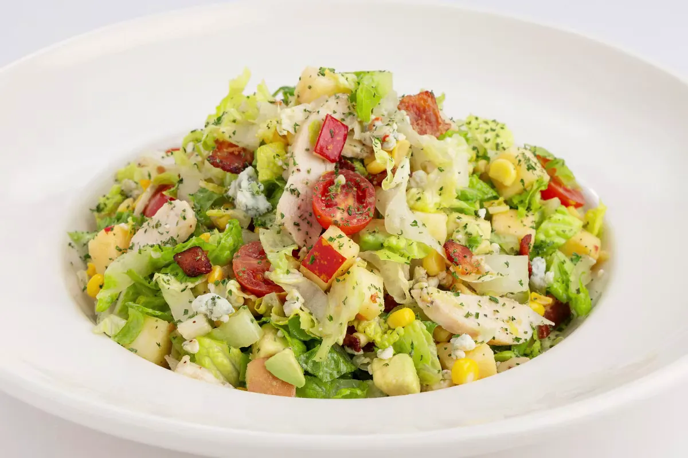
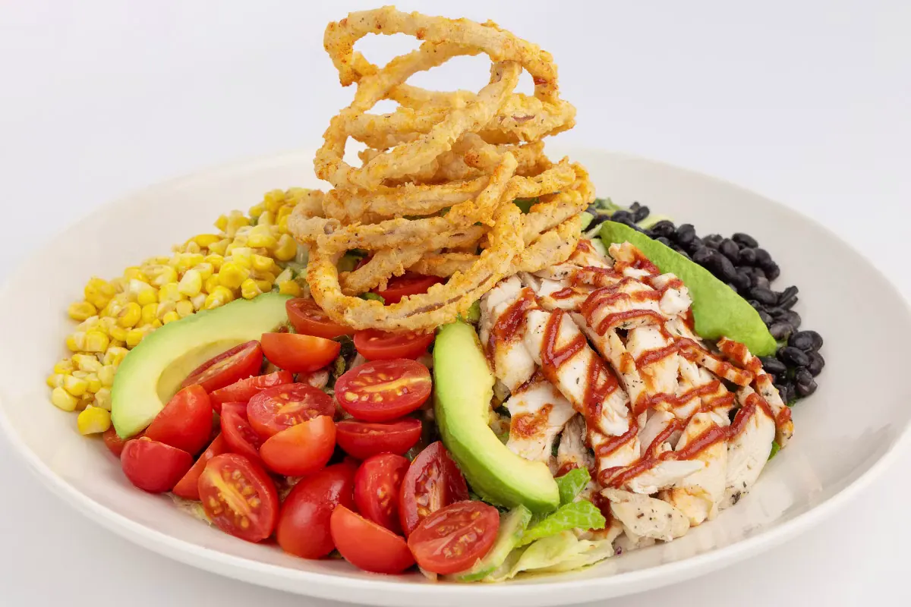
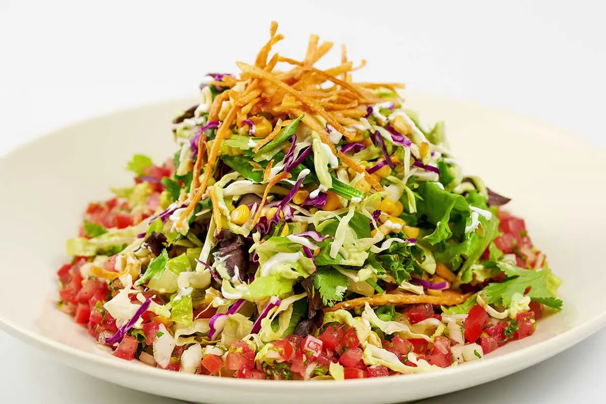
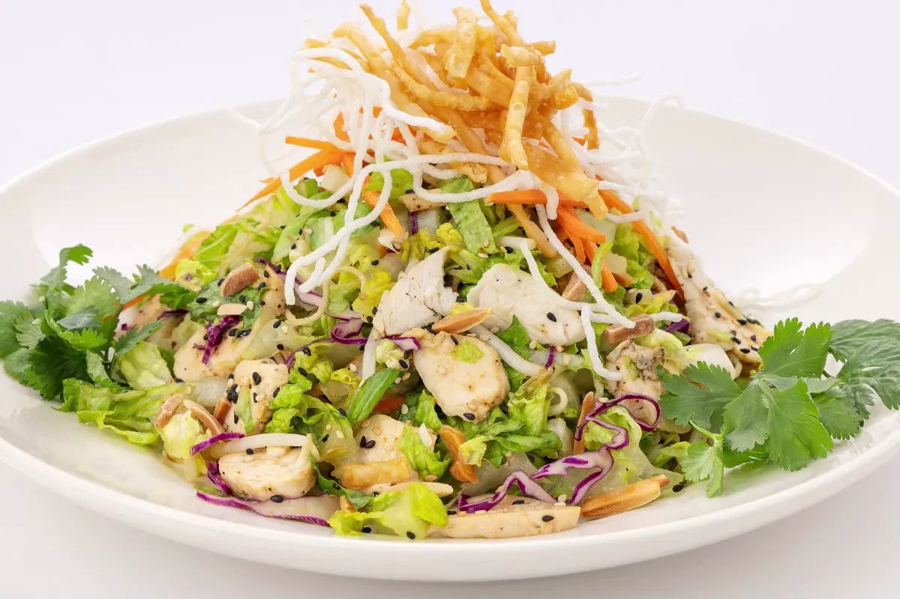

Cheesecake Factory Salads Menu: Prices, Calories, and Every Option (July 2026)
Every salad on The Cheesecake Factory menu, from full-size entree salads to the SkinnyLicious and Gluten Free lineups, with prices, calorie counts, ingredients, and customization notes. You'll also find the full dressing lineup with calories per tablespoon.
Prices and calories vary by location and can shift throughout the year, so treat the numbers below as a strong reference point rather than a guarantee for your exact restaurant. If you're watching calories closely, ask your server for the most current in-house nutrition sheet, since dressing amount and add-ons change the total fast.
Browse the full Cheesecake Factory menu for more categories, or check Happy Hour for discounted starters.
Download the Salads Menu PDF
Every salad, price, and calorie count on this page in one free, printable PDF.
Complete salads menu
The Cheesecake Factory's salad lineup splits into three groups: classic entree salads, SkinnyLicious salads built to stay lighter, and Gluten Free salads made without wheat-based ingredients. Chicken, shrimp, or steak can be added to most greens-based salads for an extra charge.

Tossed Green Salad
Mixed greens tossed with tomato, cucumber, and croutons, served with your choice of dressing. It's the simplest salad on the menu and often shows up as a side swap with sandwiches and burgers.
Main ingredients: Mixed greens, tomato, cucumber, croutons, dressing of choice
Customization: Swap or skip the croutons for a gluten-free version, add chicken or shrimp for extra protein

Caesar Salad
Crisp romaine tossed in a classic Caesar dressing with shaved parmesan and croutons. Add grilled chicken and it turns into a full meal instead of a starter.
Main ingredients: Romaine, parmesan, croutons, Caesar dressing
Customization: Add grilled or crispy chicken, shrimp, or salmon; ask for dressing on the side to control richness

Factory Chopped Salad
Julienne romaine chopped fine and mixed with grilled chicken, corn, apple, avocado, bacon, and blue cheese, all tossed in a house vinaigrette. This is one of the most ordered salads on the menu, and the appeal is in the ratio: every forkful gets a bit of sweet, salty, and creamy at once.
Main ingredients: Julienne romaine, grilled chicken, tomato, corn, apple, avocado, bacon, blue cheese, house vinaigrette
Customization: Ask for the vinaigrette on the side, remove bacon for a lighter version, or drop the chicken for a vegetarian take (blue cheese aside)

Barbeque Ranch Chicken Salad
Grilled or crispy chicken over greens with corn, black beans, tomato, avocado, and crispy onion strings, finished with a barbeque ranch dressing that's sweeter than a standard ranch.
Main ingredients: Chicken, romaine and mixed greens, corn, black beans, tomato, avocado, crispy onion strings, barbeque ranch dressing
Customization: Request dressing on the side since it's rich, swap crispy chicken for grilled to cut calories

Chinese Chicken Salad
A crunchy mix of Chinese chicken, cabbage, carrots, and wontons tossed in a sesame-soy style dressing with a noticeably sweet edge. This one skews higher in calories because of the fried wonton strips and the dressing volume.
Main ingredients: Chicken, cabbage, carrots, crispy wontons, almonds, sesame dressing
Customization: Hold the wontons for fewer carbs, ask for dressing on the side

Thai Chicken Salad
Satay-style chicken strips over rice noodles, cucumber, bean sprouts, and peanuts, tied together with a Thai vinaigrette that's sharper and more acidic than the other dressings on this list.
Main ingredients: Chicken, rice noodles, cucumber, bean sprouts, peanuts, Thai vinaigrette
Customization: Request peanuts on the side for allergy management, ask for extra lime if you like it tangier

Fried Chicken Club Salad
Crispy fried chicken over greens with bacon, tomato, and cheese, dressed with ranch. It's built more like a deconstructed club sandwich than a traditional salad, which is exactly why it's the highest-calorie option in the lineup outside of a few specialty picks.
Main ingredients: Crispy fried chicken, mixed greens, bacon, tomato, cheese, ranch dressing
Customization: Swap in grilled chicken to cut a meaningful chunk of the calorie count

Vegan Cobb Salad
Grilled asparagus, roasted beets, quinoa, and farro over greens with almonds, dressed in a vinaigrette with no animal products. It's one of the more filling vegan options on the entire menu, since quinoa and farro add a chewy density most salads skip.
Main ingredients: Mixed greens, grilled asparagus, roasted beets, quinoa, farro, almonds, vinaigrette
Customization: Ask for avocado added, request dressing on the side

Sheila's Chicken and Avocado Salad
Grilled chicken and sliced avocado over mixed greens with corn, tomato, and tortilla strips, finished with a cilantro-forward dressing.
Main ingredients: Grilled chicken, avocado, mixed greens, corn, tomato, tortilla strips, cilantro dressing
Customization: Sub grilled shrimp for chicken, hold tortilla strips for a lower-carb version

Seared Tuna Tataki Salad
Seared ahi tuna sliced thin over greens with a soy-ginger style dressing. It's the most expensive salad on the menu and also the leanest per calorie, since tuna carries a high protein load without much added fat.
Main ingredients: Seared ahi tuna, mixed greens, cucumber, sesame, soy-ginger dressing
Customization: Request the tuna cooked slightly more if you prefer less rare center

Little Gem Lettuce Salad
Roasted apples, blue cheese, candied pecans and vinaigrette over little gem lettuce.

Cobb Salad
Chicken breast, avocado, blue cheese, bacon, tomato, egg and mixed greens tossed in our vinaigrette. The classic, non-vegan version of Cobb, distinct from the Vegan Cobb Salad above.

Santa Fe Salad
Marinated chicken, fresh corn, black beans, cheese, tortilla strips, tomato and romaine with a spicy peanut-cilantro vinaigrette.
SkinnyLicious salads
Every item under the SkinnyLicious banner is built to land at 590 calories or under before dressing is added in excess. These use lighter vinaigrettes instead of creamy dressings and smaller cheese and bacon portions.

SkinnyLicious Factory Chopped Salad
A trimmed-down version of the standard Factory Chopped Salad, made with a lighter vinaigrette and smaller portions of bacon and blue cheese so the whole plate stays under 600 calories.
Main ingredients: Julienne romaine, grilled chicken, corn, apple, avocado, reduced bacon and blue cheese, skinny vinaigrette

SkinnyLicious Mexican Tortilla Salad
Grilled chicken over greens with black beans, corn, tomato, and a light amount of tortilla strips, dressed in a cilantro vinaigrette instead of a cream-based sauce. This is a solid pick if you want spice without the heavier dressings used elsewhere on the menu.
Main ingredients: Grilled chicken, mixed greens, black beans, corn, tomato, tortilla strips, cilantro vinaigrette

SkinnyLicious Salmon Salad
Grilled salmon over a bed of greens with a light citrus or herb dressing, built specifically for protein without the added fat of fried toppings.
Main ingredients: Grilled salmon, mixed greens, tomato, cucumber, light vinaigrette
Gluten Free salads
The Cheesecake Factory keeps a dedicated Gluten Free menu, and several salads carry over directly with croutons or wontons removed or swapped.
| Salad | Approx. calories (with standard dressing) |
|---|---|
| Tossed Green Salad, no dressing | 35 |
| Tossed Green Salad with Ranch | 450 |
| Tossed Green Salad with Blue Cheese | 370 |
| Tossed Green Salad with Thousand Island | 470 |
| Caesar Salad | 720 |
| Caesar Salad with Chicken | 950 |
| Beet and Avocado Salad | 290 |
Always confirm gluten-free prep with your server, since shared fryers and prep surfaces can affect cross-contact even when an item is listed as gluten-free on the menu.
Salad dressings
Every dressing below is listed per tablespoon. Salads typically come with more than one serving of dressing mixed in, so the total on a full plate runs well above these per-tablespoon numbers.
| Dressing | Calories (per tbsp) |
|---|---|
| Balsamic Vinaigrette | 80 |
| Barbeque Ranch Dressing | 80 |
| Blue Cheese Dressing | 60 |
| Caesar Dressing | 80 |
| Chinese Plum Dressing | 60 |
| Cilantro Dressing | 60 |
| Citrus Honey Dressing | 60 |
| Ranch Dressing | 70 |
| Shallot Vinaigrette | 90 |
| SkinnyLicious Caesar Dressing | 50 |
| SkinnyLicious Mustard Vinaigrette | 15 |
| SkinnyLicious Sesame Soy Dressing | 20 |
| Spicy Peanut Vinaigrette | 60 |
| Thousand Island Dressing | 70 |
If you're trying to keep a salad light, ask for dressing on the side. Most Cheesecake Factory salads are dressed generously in the kitchen, and controlling the amount yourself is the single biggest lever for cutting calories without changing the order.
Protein add-ons for salads
Most salads can take an added protein for an extra charge, generally in this range:
- Grilled or crispy chicken breast: around $5–$7 added
- Grilled shrimp: around $6–$8 added, roughly 90 calories for the shrimp portion alone
- Grilled salmon: around $8–$10 added
- Steak medallions: around $9–$11 added
Ask your server for the current add-on pricing at your location, since this is one of the categories that shifts most often between restaurants.
Vegetarian and vegan salad options
The Vegan Cobb Salad is the only fully vegan entree salad on the standard menu, built around quinoa, farro, roasted beets, and grilled asparagus instead of animal protein. For vegetarian diners who still eat dairy, the Tossed Green Salad, Caesar Salad without chicken, and Beet and Avocado Salad all work without modification. Blue cheese and parmesan in the Caesar and Factory Chopped salads are the two ingredients to flag if you're avoiding rennet-based cheese specifically, since not every blue cheese or parmesan is vegetarian-certified.
Low-carb and high-protein salad picks
If you're avoiding carbs, skip the wontons, tortilla strips, croutons, corn, and beans, and lean toward the Caesar Salad with chicken, the Fried Chicken Club Salad without the bun-adjacent toppings, or Sheila's Chicken and Avocado Salad with tortilla strips left off. For the best protein-to-calorie ratio on the whole menu, the Seared Tuna Tataki Salad is the standout, delivering a lean protein load without the added fat that comes from bacon, fried onions, or creamy dressings.
FAQ
Prices run from about $11.95 for the Tossed Green Salad up to $24.95 for the Seared Tuna Tataki Salad, with most chicken-based entree salads landing between $16.95 and $19.95.
The Seared Tuna Tataki Salad and the SkinnyLicious salads are the lowest-calorie options, generally staying at 590 calories or under before extra dressing is added.
Yes. The Vegan Cobb Salad is built without any animal products, using quinoa, farro, roasted beets, and grilled asparagus for substance instead of meat or cheese.
Yes, and it's worth asking for, since most salads come dressed generously and controlling the amount yourself is the easiest way to cut a few hundred calories.
Several are, including the Tossed Green Salad, Caesar Salad, and Beet and Avocado Salad, when ordered from the Gluten Free menu with croutons or wontons removed. Cross-contact is still possible in a shared kitchen, so let your server know if you have a diagnosed allergy rather than a preference.
The Fried Chicken Club Salad and the Chinese Chicken Salad run the highest, often above 1,400 calories, largely because of fried toppings and dressing volume.
Most greens-based salads accept an added protein for an extra charge. Chicken and shrimp are the most common add-ons, with salmon and steak medallions available at a higher upcharge.
It's served as a full entree portion and is large enough to work as a complete meal on its own, not a side dish.
Yes. The Cheesecake Factory sets pricing at the regional or individual restaurant level, so the same salad can cost a dollar or two more or less depending on where you order.
It's a ranch base blended with barbeque sauce, which gives it a sweeter, smokier profile than a standard ranch dressing. Ask for it on the side if you want to control how much goes on the salad.
Final thoughts
The Cheesecake Factory's salad menu covers more ground than most casual restaurants attempt, from a basic $11.95 tossed green option to a $24.95 seared tuna plate built for lean protein. The biggest calorie swings come from dressing volume and fried toppings rather than the greens themselves, so the fastest way to lighten any order is asking for dressing on the side and skipping the fried onion strips or wonton strips where they show up. Whatever you're after, whether that's the highest protein count or the lowest carb load, there's a specific salad here built for that exact goal.
For full calorie details, see our nutrition guide, and check the gluten-free menu for wheat-free salad options.